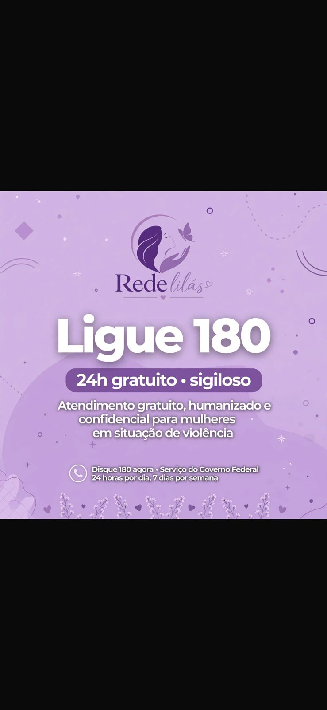

Informação também é proteção
Conheça seus Direitos
A Lei Maria da Penha protege mulheres contra a violência doméstica e familiar. A violência pode ser física, psicológica, sexual, patrimonial ou moral.
Quais são os seus direitos na lei?
A lei criou mecanismos para proteger a mulher. Os principais são:
- Medida Protetiva de Urgência (Arts. 22, 23 e 24): o juiz pode, em até 48 horas, obrigar o agressor a sair de casa e proibir que ele se aproxime de você, da sua família, do seu trabalho e da escola dos seus filhos.
- A vítima não pode entregar a intimação (Art. 21): para sua segurança, quem entrega é a polícia ou o oficial de justiça, nunca você.
- Você não pode ser obrigada a ficar frente a frente com o agressor (Art. 21).
- Atendimento especializado (Arts. 8 e 9): você tem direito a atendimento policial, de saúde e jurídico especializado, sem precisar pagar nada.
Você pode buscar ajuda quando houver:
- ameaças, humilhações, controle ou isolamento;
- agressões, perseguição ou impedimento de sair;
- retenção de documentos, dinheiro ou objetos;
- qualquer contato ou relação sexual sem consentimento.
Onde procurar apoio
Em uma emergência, ligue 190. Para orientação e denúncias, ligue 180. Você também pode procurar uma Delegacia da Mulher, a Defensoria Pública ou o Ministério Público.
A culpa nunca é da vítima. Você tem direito a ser ouvida, protegida e atendida com respeito.